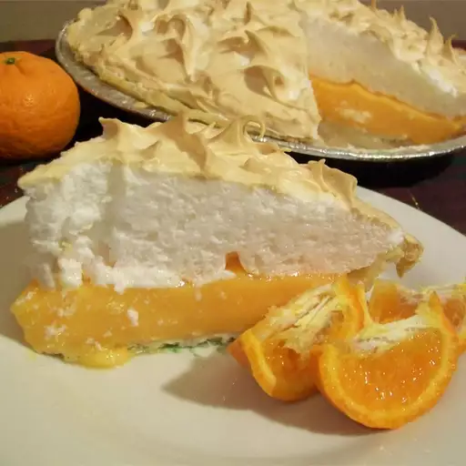

Orange Meringue Pie
Home

Description
A twist on the class lemon meringue pie, this orange meringue pie is sure to not disappoint with its colourful citrus taste!
Ingredients
- 1 (9 inch) unbaked pie crust
- ¾ cup sugar
- ⅓ cup cornstarch
- 1 pinch salt
- 1 cup orange juice
- ½ cup lemon juice
- ¼ cup water
- 4 eggs, separated
- 4 tablespoons butter or margarine, cut into pieces
- 2 teaspoons grated orange zest
- ½ cup diced orange segments
- ½ cup white sugar
- ¼ teaspoon cream of tartar
Steps
- Preheat oven to 400 degrees F (205 degrees C). Line pastry with aluminum foil and a layer of pie weights or dried beans. Bake in the preheated oven until edge of crust is golden, about 10 minutes. Carefully remove the foil and weights; bake about 5 minutes more.
- In a small saucepan, stir together the 3/4 cup sugar, 1/3 cup cornstarch, and salt. Mix in the orange juice, lemon juice, and water. Whisk in the egg yolks. Cook over medium heat, stirring frequently, until thick and bubbly, about 5 minutes. Remove from heat, and stir in butter and orange zest. If desired; stir in diced orange segments. Pour into prepared pie crust, cover with plastic wrap, and set aside to cool.
- When pie filling has cooled to room temperature, preheat oven and prepare meringue. Preheat oven to 350 degrees F (175 degrees C). In a large glass or metal bowl, beat egg whites until foamy. Gradually add 1/2 cup sugar and cream of tartar, continuing to beat until stiff peaks form. Lift your beater or whisk straight up: the egg whites should form a sharp peak that holds its shape. Spread over pie, making sure the meringue completely covers the filling and meets the edges of the pie crust.
- Bake in preheated oven until meringue topping is golden brown, about 15 minutes.